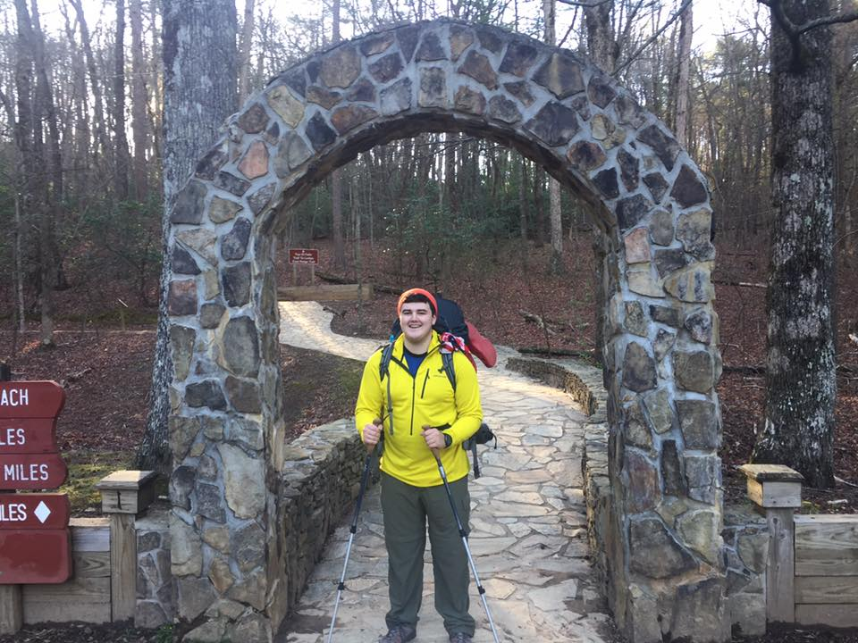

Hello, My name is Ian Mitchell. I am a hard working aspiring coder taking a Coding Bootcamp at Northwestern University. After highschool, I attended the university of Vermont (UVM) to study electrical engineering. It didn't go well. I have struggled in a strictly academic environment for my entire life and, when I moved to a more rigorous program in college, the small amount of progress I had made quickly fell off. After finishing 3 semesters at UVM, I decided to leave school and pursue a career through other means. I wound up working for a congressional candidate named Brad Schneider full time for a year. Brad was running for Illinois' 10th congressional district. He ended up winning and being reelected to the United States House of Representatives. After that, I worked on a local law firm's cloud based file storage system for a few months before embarking on the adventure of a lifetime.
I heard of the Applachian Trail (AT) many years ago mentioned somewhere that I dont even remember now. For whatever reason, it stuck with me. I started to fantasize about the 2,200 mile trail and being able to complete the whole thing on a journey that usually takes 6 months of continous hiking. On april 1st 2017 I started the hike. With nothing but my backpack full of the gear I'd been researching for months. The first night was the hardest. After an overnight bus to Atlanta and an expensive ride from there to the trailhead, I had to hike backwards from where I was dropped off to the actual start of the approach trail (8 miles up Amicalola Falls to the first marker of the AT). I stayed the night in a rickety shack called a shelter with a random guy I had just met. It was weird and surreal, this thing I had been thinking about doing for years was finally starting and I hated it. After the first day though I quickly fell in love. I fell in love with the outdoors, with the loving nature of the people around me and mostly with the trail. It stretches from Georgia to Maine over 2,190.3 (but whos counting) miles. Unfortunately, after 4 months and 1,000+ miles, my left foot gave out. I had a stress fracture that I tried to hike on for a week that finally split right down my bone and the two pieces started to seperate. That ended my hike this year but I will certainly be back to restart the whole thing over and make it all the way to Maine.